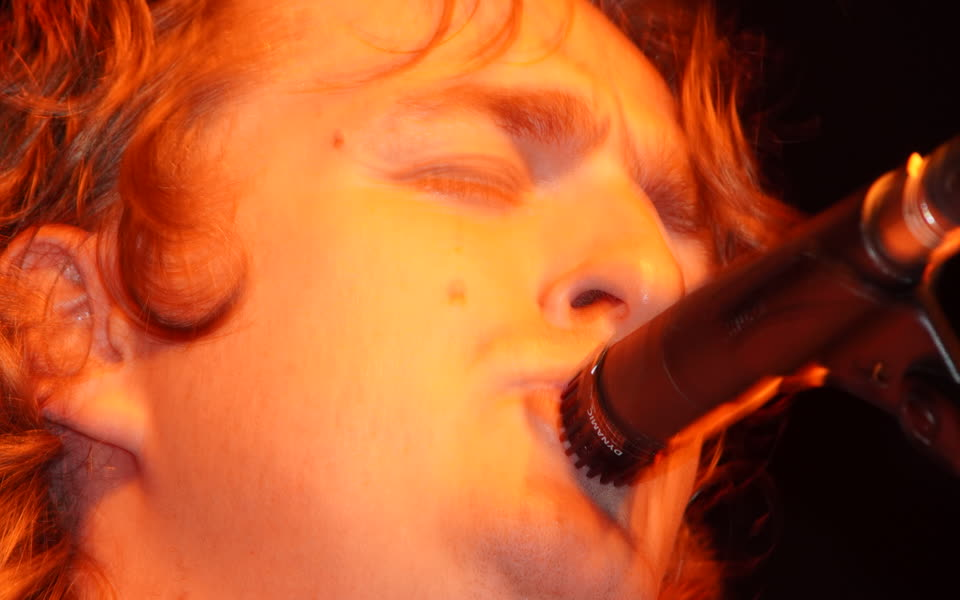
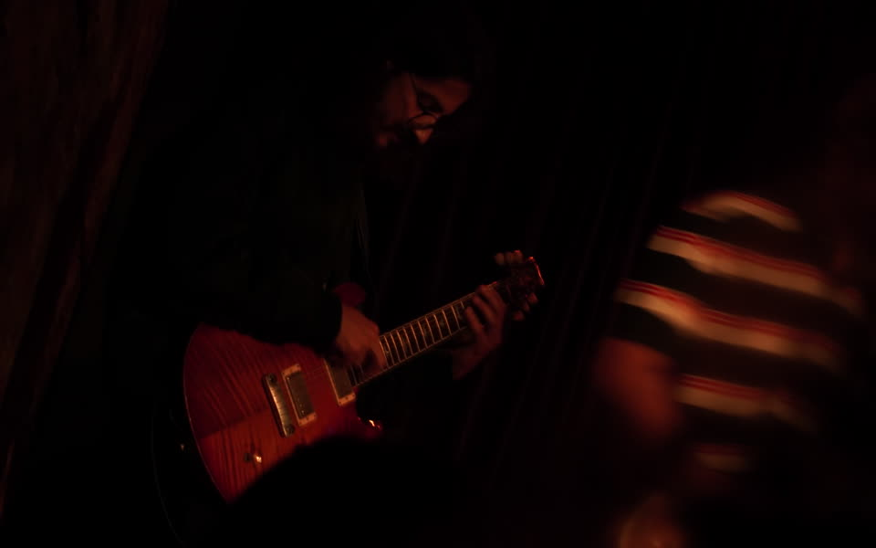
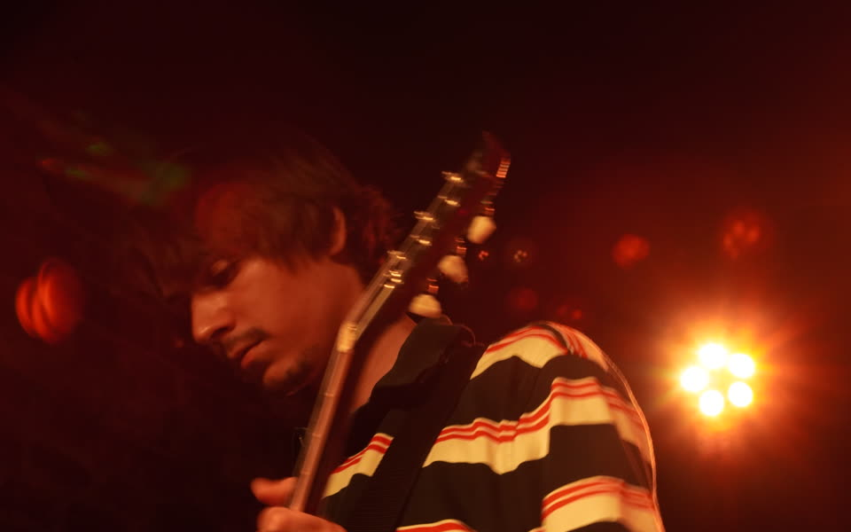
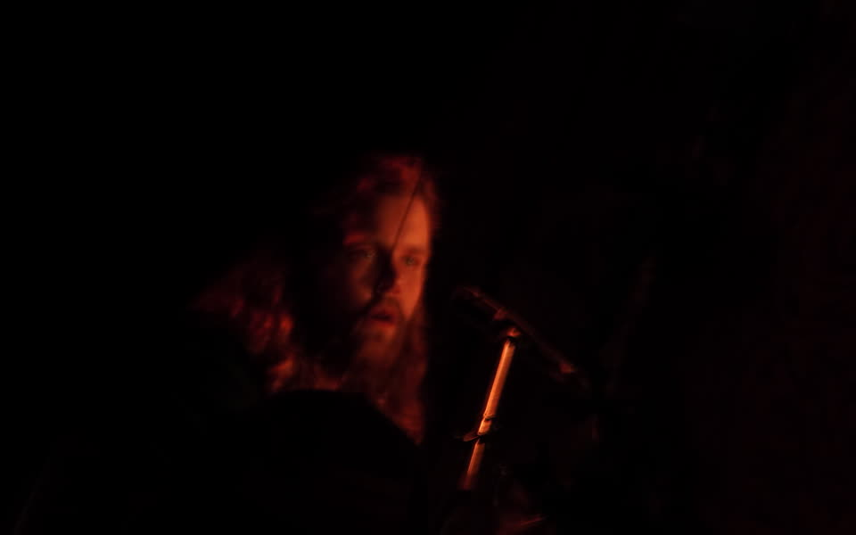
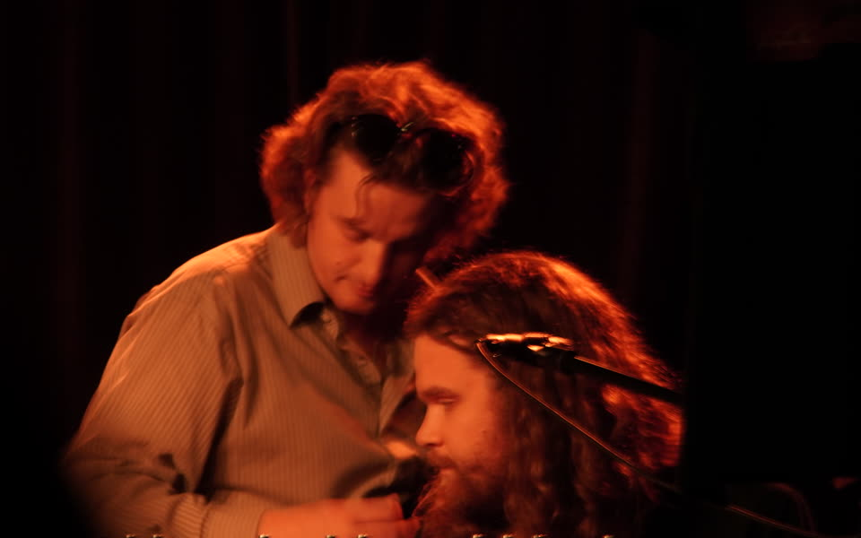
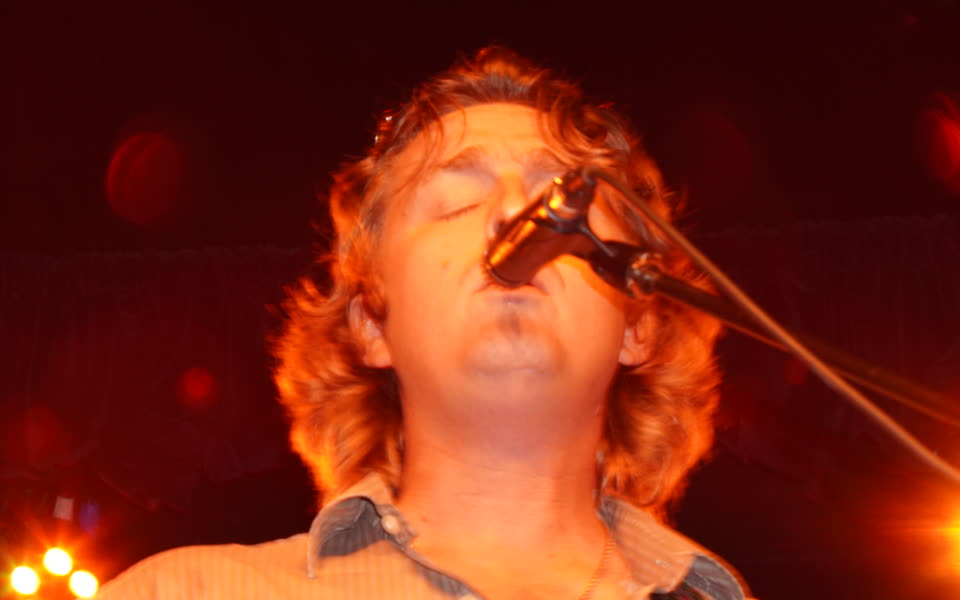
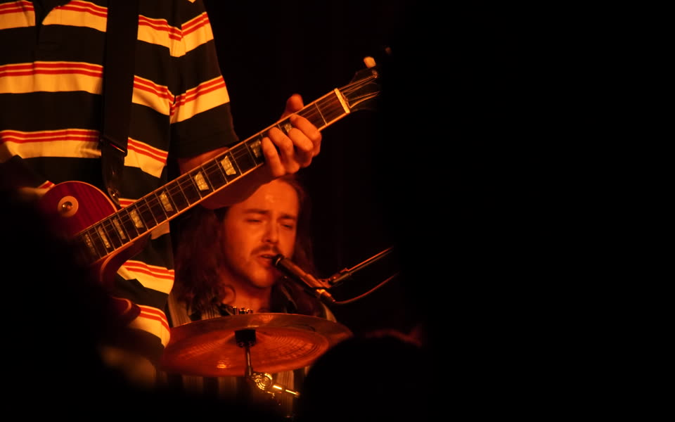

Cameron House

PhotoSpencer Opens The Set
A lead frame from the Cameron House folder.
Live Clip
Embedded alongside the stills.
Kevin On Drums
Backline energy from the room.

PhotoHamza On Stage
A tighter stage-side frame.

PhotoDylan In The Pocket
A clean single-player moment.

PhotoBennett At The Keys
Dedicated keys coverage for the set.

PhotoShared Spotlight
A duo frame from the same night.

PhotoSecond Pass
A wider live frame from the room.

PhotoDrum Detail
A closer cut from the set.